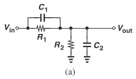

P1. 수동 RC 필터의 전달 함수
주어진 조건
- Fig 15.17(a)에서 입력과 출력 사이, 출력과 접지 사이에 각각 병렬 RC 가지가 있다.
구할 것
- 이 회로의 주파수 응답을 구한다.

병렬 RC 두 가지를 분압식에 넣어요
㉠ 입력과 출력 사이가 $Z_1=R_1\parallel(1/sC_1)$이고, ㉡ 출력과 접지 사이가 $Z_2=R_2\parallel(1/sC_2)$예요. 출력은 $Z_2$ 양단에서 읽어요.
$$H(s)=\frac{Z_2}{Z_1+Z_2}$$
$H(s)$를 1차 항의 비로 정리한 뒤 $s=j\omega$를 대입해요.
$$\omega_z=\frac{1}{R_1C_1}$$
$$\omega_p=\frac{1}{(R_1\parallel R_2)(C_1+C_2)}$$
$R_1C_1>R_2C_2$이면 영점이 먼저 와서 크기가 상승해요. $R_1C_1<R_2C_2$이면 극점이 먼저 와서 하강해요. 두 시정수가 같으면 평탄해요.
$$H(j\omega)=\frac{R_2}{R_1+R_2}\frac{1+j\omega/\omega_z}{1+j\omega/\omega_p}$$
$$H(0)=\frac{R_2}{R_1+R_2}$$
$$\lim_{\omega\to\infty}H(j\omega)=\frac{C_1}{C_1+C_2}$$
출력에서 접지로 내려가는 병렬 RC 임피던스의 분압비를 쓰고, 극점과 영점의 순서로 응답이 오를지 내릴지 판단해요.